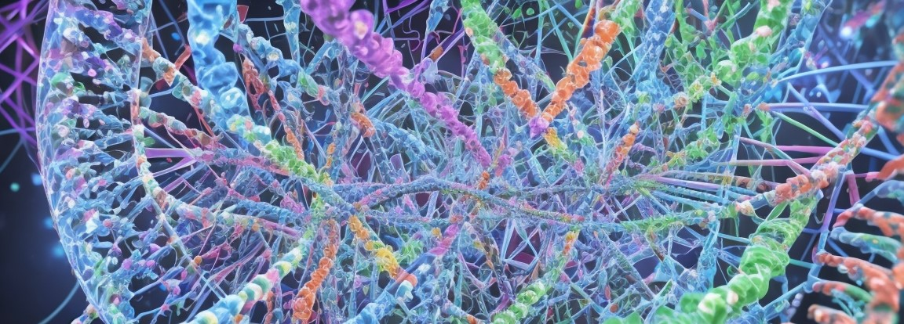

Jennifer Doudna
 Jennifer Doudna, nata il 19 febbraio 1964, è una biochimica e biologa molecolare di spicco.
Ha conseguito un dottorato in Chimica Biologica e Farmacologia Molecolare presso l'Università di Harvard
e ha ricoperto posizioni accademiche presso istituzioni come la Harvard Medical School e l'Università della California, Berkeley.
Doudna è riconosciuta a livello internazionale per il suo ruolo cruciale nello sviluppo della tecnologia di editing genetico CRISPR-Cas9,
frutto di una collaborazione con la microbiologa Emmanuelle Charpentier.
Questa tecnologia innovativa consente l'editing preciso del DNA, offrendo opportunità senza precedenti per la ricerca genetica,
il trattamento delle malattie e la creazione di organismi geneticamente modificati.
Riconoscendo i suoi eccezionali contributi, Doudna, insieme a Charpentier, ha ricevuto numerosi riconoscimenti,
tra cui il Premio Nobel per la Chimica nel 2020, il Breakthrough Prize in Life Sciences, il Japan Prize e il Kavli Prize in Nanoscience.
Oltre ai suoi successi scientifici, Doudna si impegna attivamente nelle considerazioni etiche legate all'editing genetico.
La sua difesa sottolinea l'uso responsabile ed etico della tecnologia CRISPR,
specialmente in relazione alle potenziali applicazioni nella genetica umana.
In conclusione, Jennifer Doudna è una figura di spicco nella biologia molecolare,
plasmando il panorama della ricerca genetica e della tecnologia, e contribuendo in modo significativo agli avanzamenti scientifici.